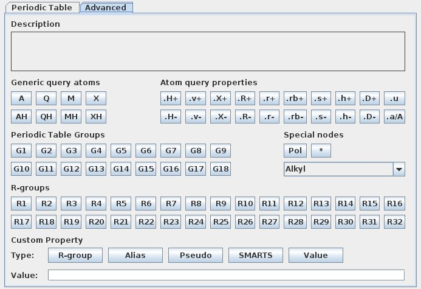
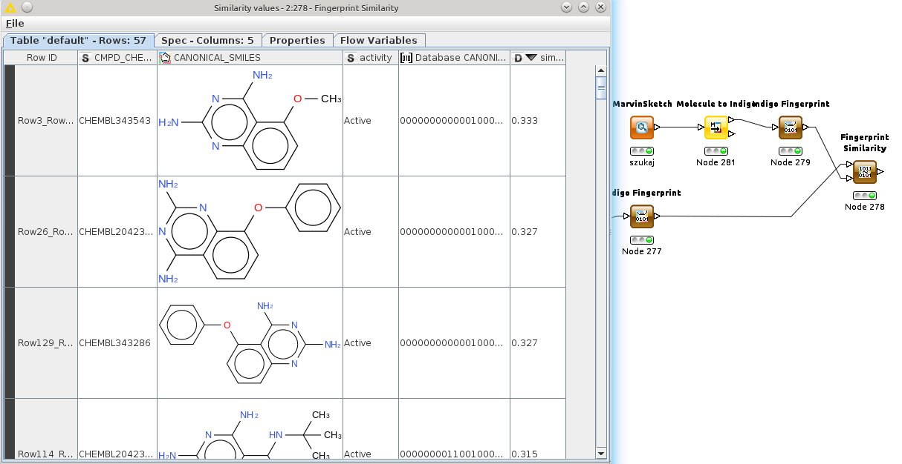
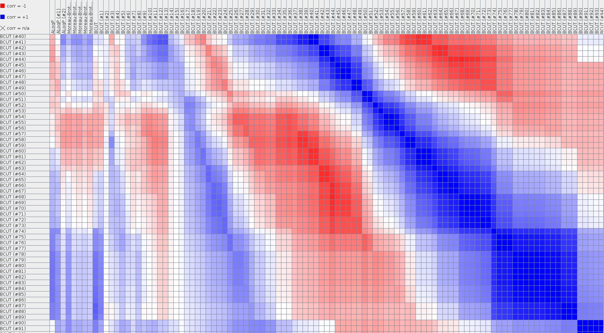
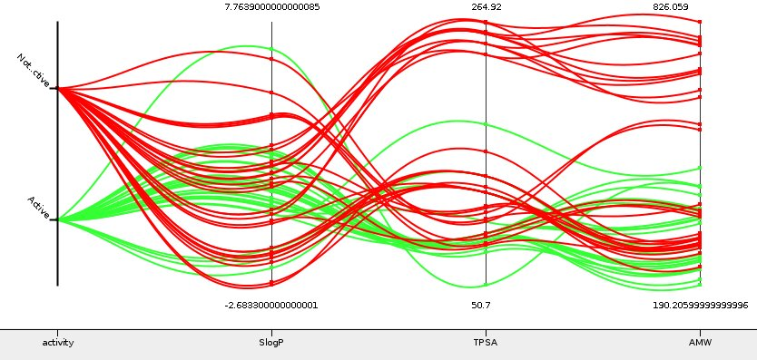

Seurat
What Seurat can do for you...
- Compound and assay registration
- Search and query chemical, physical, and biological properties
- SAR: R-Group Analysis
- Elevate hits to leads, lead optimization, and PK analyses
- Share data with one-click Live Reports
- Plotting and visual data mining
System "szyty na miarę"
Co jest nam potrzebne?
(wszystko)
Jakie typy raportów?
(każde)
System mieszany
Baza danych z wynikami + moduł do obróbki danych
KNIME
Zalety
- Bardzo elastyczny (tabele, raporty, data mining itp)
- "Templejty" (workflows, raports)
- Dane z/do SQL, MS Office, copy&Paste
- Darmowy
- ...
Wady
Przeszukiwanie - SMARTS

Przeszukiwanie - podobieństwo

Inne analizy...

